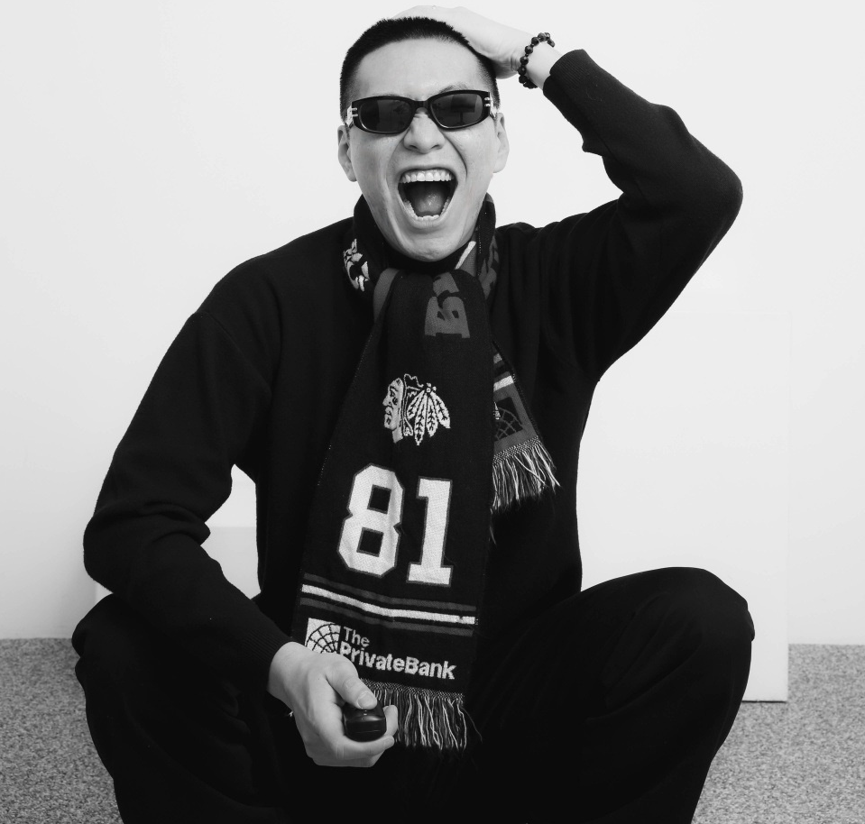

Scroll down to know more about me
Hello!
I am currently pursuing a Ph.D. at Hanyang University, advised by Prof. Yoon-seon Oh (2023-Present).
Prior to my doctoral studies, I worked as a Computer Vision Researcher at
Mirero System (2020-2023).
I received my B.S. in Computer Science and Engineering from
Jeonbuk National University (2015-2020).
My research interests lie at the intersection of Robotics and Computer Vision.

Email: cbigo@hanyang.ac.kr